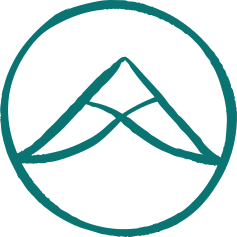
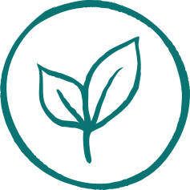
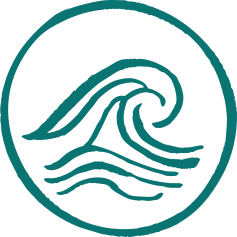
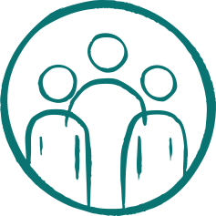
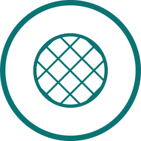

Producer or marketing co-op
Each member keeps their own farm; together they own the shared piece — a brand, a cooler, a truck, a wholesale relationship. Think: a valley of small farms that can't each fill a big order alone, selling under one name.

E kahe ka wai.
A network of people and cooperatives building a regenerative and just Hawaiʻi through shared resources, knowledge, and community ownership.
Join the Movement →
Like the wai that moves from mauka to makai, we believe in an economy where resources circulate, nourish, and return — strengthening our communities for generations to come.

Care for land and more than human kin

Local food systems and resilient livelihoods

Keep resources circulating in community

Stronger together
Share knowledge and build capacity

Cooperative practice and collective action
Hawaiʻi Co-op Cohort · December 2026 – November 2027
The Hawaiʻi Co-op Cohort is a WSARE grant-supported learning community for folks who are building, strengthening, or supporting agricultural cooperatives across Hawaiʻi.
December 2026 – November 2027
Monthly virtual sessions + in-person workshops on Hawaiʻi Island, Molokaʻi, Oʻahu and Maui
For producers, co-op members and leaders, emerging co-ops, and cooperative development practitioners
You don't need a co-op yet, or the vocabulary — just something you're working on and a wish to do it with others.
Waiwai · Kaiāulu
You don't need to know the word "cooperative" to understand the idea. If you've ever lived in a family house where everybody chips in and everybody has a say, you already get it.
What it is. A co-op is a business owned by the people who use it or work in it — not outside investors. Members put in money or work, vote on the big decisions, and share the surplus.
Why it works. One owner carries all the risk. In a co-op, risk and reward are shared, every member gets one vote, and everyone is genuinely invested.
Why here. Laulima — many hands working together. A co-op is the legal structure for the same thing, and it keeps waiwai home, circulating in the kaiāulu instead of leaving.
Set out by the International Cooperative Alliance and shared by co-ops around the world.
Four common shapes, each with a made-up Hawaiʻi example.
Each member keeps their own farm; together they own the shared piece — a brand, a cooler, a truck, a wholesale relationship. Think: a valley of small farms that can't each fill a big order alone, selling under one name.
The crew owns the business and votes on how it runs. Think: a shared kitchen turning kalo, ʻulu, and surplus fruit into products, where the people who show up every morning are also the owners.
Members pool buying power or share big-ticket things no single farm needs full time. Think: ranchers going in together on feed, fencing, and a portable chute, or growers sharing one bookkeeper.
Farmers, workers, and community members each hold a seat. Think: a food hub where the growers who supply it, the staff who run it, and the families who buy from it all elect the board.
Farmers, ranchers, growers, and other producers who want to work together instead of alone.
People already in a cooperative who want to make it stronger.
Groups that are forming, or thinking about it, and don't want to guess their way through.
The advisors, organizers, and technical-assistance folks who help co-ops start and grow.
Our Work
The Hawaiʻi Co-op Hui connects people, organizations, and resources to grow a thriving cooperative economy rooted in ʻāina, culture, and community self-determination.
About Our Work →E komo mai
Curious about the cohort, thinking about a co-op, or already in one? Start here — this isn't a commitment, it just lets us know you're out there.
Prefer email? Write to kaimi@purplemaia.org.
We'll be in touch as cohort details take shape. In the meantime, the readings and listening on the Collaboration page are a good place to start. E kahe ka wai.